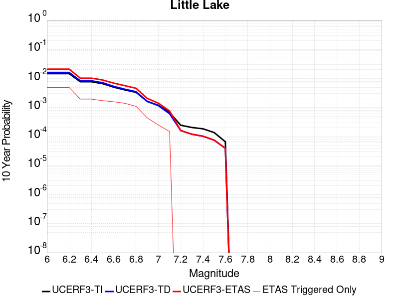

| ComCat M6.4 (ci38443183), ShakeMap Surface | |
|---|---|
| Num Simulations | 26721 (incomplete) |
| Start Time | 2019/07/04 17:33:50 UTC |
| Start Time Epoch Milliseconds | 1562261630000 |
| Duration | 10 Years |
| Includes Spontaneous? | false |
| Historical Ruptures | (none) |
| Magnitude | 1 Hour Prob | 1 Day Prob | 1 Week Prob | 1 Month Prob | 1 Year Prob | 10 Year Prob |
|---|---|---|---|---|---|---|
| M≥3 | 1.000 (100.00%) | 1.000 (100.00%) | 1.000 (100.00%) | 1.000 (100.00%) | 1.000 (100.00%) | 1.000 (100.00%) |
| M≥3.5 | 1.000 (99.99%) | 1.000 (100.00%) | 1.000 (100.00%) | 1.000 (100.00%) | 1.000 (100.00%) | 1.000 (100.00%) |
| M≥4 | 0.947 (94.74%) | 0.999 (99.94%) | 1.000 (99.98%) | 1.000 (100.00%) | 1.000 (100.00%) | 1.000 (100.00%) |
| M≥4.5 | 0.610 (60.97%) | 0.903 (90.26%) | 0.958 (95.76%) | 0.978 (97.80%) | 0.991 (99.12%) | 0.995 (99.53%) |
| M≥5 | 0.257 (25.73%) | 0.530 (53.00%) | 0.644 (64.35%) | 0.712 (71.22%) | 0.796 (79.56%) | 0.846 (84.63%) |
| M≥5.5 | 0.086 (8.59%) | 0.209 (20.90%) | 0.279 (27.90%) | 0.328 (32.79%) | 0.400 (39.95%) | 0.460 (45.99%) |
| M≥6 | 0.025 (2.51%) | 0.066 (6.64%) | 0.093 (9.29%) | 0.113 (11.29%) | 0.147 (14.70%) | 0.178 (17.83%) |
| M≥6.4 | 8.79E-3 (0.88%) | 0.023 (2.34%) | 0.033 (3.33%) | 0.041 (4.07%) | 0.053 (5.34%) | 0.067 (6.69%) |
| M≥6.5 | 6.40E-3 (0.64%) | 0.017 (1.73%) | 0.025 (2.47%) | 0.031 (3.05%) | 0.040 (3.98%) | 0.051 (5.09%) |
| M≥7 | 1.50E-3 (0.15%) | 3.93E-3 (0.39%) | 5.73E-3 (0.57%) | 7.26E-3 (0.73%) | 9.99E-3 (1.00%) | 0.013 (1.35%) |
| M≥7.5 | 2.99E-4 (0.03%) | 8.98E-4 (0.09%) | 1.23E-3 (0.12%) | 1.87E-3 (0.19%) | 2.69E-3 (0.27%) | 3.82E-3 (0.38%) |
| M≥8 | 0.000 (0.00%) | 0.000 (0.00%) | 0.000 (0.00%) | 0.000 (0.00%) | 0.000 (0.00%) | 3.74E-5 (0.00%) |
Legend
| Mag | Mean | 2.5 %ile | 97.5 %ile | Median | Mode | 10 yr Probability | 10 yr Supra-Seis Prob | Primary Aftershocks Mean |
|---|---|---|---|---|---|---|---|---|
| M≥2.5 | 984.602 | 544.000 | 2854.000 | 723.000 | 637.000 | 1.000 (100.00%) | 0.046 (4.65%) | 419.058 |
| M≥2.6 | 782.177 | 429.000 | 2278.000 | 575.000 | 499.000 | 1.000 (100.00%) | 0.046 (4.65%) | 332.902 |
| M≥2.7 | 621.191 | 338.000 | 1819.000 | 457.000 | 399.000 | 1.000 (100.00%) | 0.046 (4.65%) | 264.423 |
| M≥2.8 | 493.353 | 265.000 | 1444.000 | 363.000 | 323.000 | 1.000 (100.00%) | 0.046 (4.65%) | 209.937 |
| M≥2.9 | 391.853 | 208.000 | 1144.000 | 289.000 | 260.000 | 1.000 (100.00%) | 0.046 (4.65%) | 166.737 |
| M≥3 | 311.167 | 163.000 | 910.000 | 230.000 | 206.000 | 1.000 (100.00%) | 0.046 (4.65%) | 132.415 |
| M≥3.1 | 247.105 | 127.000 | 726.000 | 183.000 | 163.000 | 1.000 (100.00%) | 0.046 (4.65%) | 105.165 |
| M≥3.2 | 196.317 | 99.000 | 578.000 | 146.000 | 124.000 | 1.000 (100.00%) | 0.046 (4.65%) | 83.528 |
| M≥3.3 | 155.994 | 77.000 | 460.000 | 116.000 | 105.000 | 1.000 (100.00%) | 0.046 (4.65%) | 66.354 |
| M≥3.4 | 123.937 | 59.000 | 366.000 | 92.000 | 78.000 | 1.000 (100.00%) | 0.046 (4.65%) | 52.724 |
| M≥3.5 | 98.440 | 45.000 | 291.000 | 73.000 | 67.000 | 1.000 (100.00%) | 0.046 (4.65%) | 41.867 |
| M≥3.6 | 78.139 | 34.000 | 231.000 | 58.000 | 51.000 | 1.000 (100.00%) | 0.046 (4.65%) | 33.243 |
| M≥3.7 | 62.049 | 26.000 | 185.000 | 47.000 | 42.000 | 1.000 (100.00%) | 0.046 (4.65%) | 26.401 |
| M≥3.8 | 49.273 | 20.000 | 147.000 | 37.000 | 32.000 | 1.000 (100.00%) | 0.046 (4.65%) | 20.987 |
| M≥3.9 | 39.137 | 15.000 | 118.000 | 29.000 | 25.000 | 1.000 (100.00%) | 0.046 (4.65%) | 16.663 |
| M≥4 | 31.073 | 11.000 | 94.000 | 23.000 | 19.000 | 1.000 (100.00%) | 0.046 (4.65%) | 13.222 |
| M≥4.1 | 24.665 | 8.000 | 75.000 | 19.000 | 17.000 | 1.000 (100.00%) | 0.046 (4.65%) | 10.494 |
| M≥4.2 | 19.578 | 5.000 | 60.000 | 15.000 | 13.000 | 1.000 (100.00%) | 0.046 (4.65%) | 8.332 |
| M≥4.3 | 15.533 | 4.000 | 48.000 | 12.000 | 9.000 | 1.000 (99.98%) | 0.046 (4.65%) | 6.611 |
| M≥4.4 | 12.324 | 2.000 | 39.000 | 9.000 | 8.000 | 0.999 (99.88%) | 0.046 (4.65%) | 5.240 |
| M≥4.5 | 9.783 | 2.000 | 32.000 | 7.000 | 6.000 | 0.995 (99.53%) | 0.046 (4.65%) | 4.162 |
| M≥4.6 | 7.757 | 1.000 | 26.000 | 6.000 | 4.000 | 0.987 (98.69%) | 0.046 (4.65%) | 3.302 |
| M≥4.7 | 6.153 | 0.000 | 21.000 | 4.000 | 3.000 | 0.971 (97.07%) | 0.046 (4.65%) | 2.618 |
| M≥4.8 | 4.884 | 0.000 | 17.000 | 3.000 | 2.000 | 0.943 (94.31%) | 0.046 (4.65%) | 2.078 |
| M≥4.9 | 3.862 | 0.000 | 14.000 | 3.000 | 2.000 | 0.901 (90.15%) | 0.046 (4.65%) | 1.643 |
| M≥5 | 3.052 | 0.000 | 11.000 | 2.000 | 1.000 | 0.846 (84.63%) | 0.046 (4.65%) | 1.300 |
| M≥5.1 | 2.412 | 0.000 | 10.000 | 2.000 | 1.000 | 0.777 (77.73%) | 0.046 (4.65%) | 1.026 |
| M≥5.2 | 1.899 | 0.000 | 8.000 | 1.000 | 0.000 | 0.699 (69.94%) | 0.046 (4.65%) | 0.809 |
| M≥5.3 | 1.495 | 0.000 | 7.000 | 1.000 | 0.000 | 0.618 (61.82%) | 0.046 (4.65%) | 0.637 |
| M≥5.4 | 1.169 | 0.000 | 6.000 | 1.000 | 0.000 | 0.538 (53.78%) | 0.046 (4.65%) | 0.499 |
| M≥5.5 | 0.918 | 0.000 | 5.000 | 0.000 | 0.000 | 0.460 (45.99%) | 0.046 (4.65%) | 0.391 |
| M≥5.6 | 0.717 | 0.000 | 4.000 | 0.000 | 0.000 | 0.390 (39.05%) | 0.046 (4.65%) | 0.306 |
| M≥5.7 | 0.555 | 0.000 | 3.000 | 0.000 | 0.000 | 0.324 (32.43%) | 0.046 (4.65%) | 0.238 |
| M≥5.8 | 0.425 | 0.000 | 3.000 | 0.000 | 0.000 | 0.265 (26.45%) | 0.046 (4.65%) | 0.182 |
| M≥5.9 | 0.325 | 0.000 | 2.000 | 0.000 | 0.000 | 0.216 (21.57%) | 0.046 (4.65%) | 0.141 |
| M≥6 | 0.256 | 0.000 | 2.000 | 0.000 | 0.000 | 0.178 (17.83%) | 0.046 (4.64%) | 0.111 |
| M≥6.1 | 0.196 | 0.000 | 2.000 | 0.000 | 0.000 | 0.144 (14.40%) | 0.038 (3.82%) | 0.088 |
| M≥6.2 | 0.145 | 0.000 | 1.000 | 0.000 | 0.000 | 0.113 (11.30%) | 0.029 (2.94%) | 0.067 |
| M≥6.3 | 0.108 | 0.000 | 1.000 | 0.000 | 0.000 | 0.087 (8.75%) | 0.024 (2.41%) | 0.051 |
| M≥6.4 | 0.082 | 0.000 | 1.000 | 0.000 | 0.000 | 0.067 (6.69%) | 0.020 (1.99%) | 0.038 |
| M≥6.5 | 0.062 | 0.000 | 1.000 | 0.000 | 0.000 | 0.051 (5.09%) | 0.017 (1.71%) | 0.027 |
| M≥6.6 | 0.047 | 0.000 | 1.000 | 0.000 | 0.000 | 0.040 (3.97%) | 0.016 (1.56%) | 0.020 |
| M≥6.7 | 0.035 | 0.000 | 1.000 | 0.000 | 0.000 | 0.030 (3.04%) | 0.014 (1.36%) | 0.015 |
| M≥6.8 | 0.026 | 0.000 | 0.000 | 0.000 | 0.000 | 0.023 (2.32%) | 0.012 (1.21%) | 0.011 |
| M≥6.9 | 0.019 | 0.000 | 0.000 | 0.000 | 0.000 | 0.018 (1.76%) | 0.010 (1.04%) | 8.01E-3 |
| M≥7 | 0.014 | 0.000 | 0.000 | 0.000 | 0.000 | 0.013 (1.35%) | 9.21E-3 (0.92%) | 5.91E-3 |
| M≥7.1 | 0.011 | 0.000 | 0.000 | 0.000 | 0.000 | 0.011 (1.09%) | 8.68E-3 (0.87%) | 4.12E-3 |
| M≥7.2 | 8.79E-3 | 0.000 | 0.000 | 0.000 | 0.000 | 8.50E-3 (0.85%) | 7.22E-3 (0.72%) | 3.07E-3 |
| M≥7.3 | 5.69E-3 | 0.000 | 0.000 | 0.000 | 0.000 | 5.58E-3 (0.56%) | 5.09E-3 (0.51%) | 1.98E-3 |
| M≥7.4 | 4.98E-3 | 0.000 | 0.000 | 0.000 | 0.000 | 4.87E-3 (0.49%) | 4.60E-3 (0.46%) | 1.72E-3 |
| M≥7.5 | 3.85E-3 | 0.000 | 0.000 | 0.000 | 0.000 | 3.82E-3 (0.38%) | 3.74E-3 (0.37%) | 1.31E-3 |
| M≥7.6 | 2.58E-3 | 0.000 | 0.000 | 0.000 | 0.000 | 2.58E-3 (0.26%) | 2.54E-3 (0.25%) | 7.86E-4 |
| M≥7.7 | 9.36E-4 | 0.000 | 0.000 | 0.000 | 0.000 | 9.36E-4 (0.09%) | 8.98E-4 (0.09%) | 2.99E-4 |
| M≥7.8 | 4.87E-4 | 0.000 | 0.000 | 0.000 | 0.000 | 4.87E-4 (0.05%) | 4.49E-4 (0.04%) | 7.48E-5 |
| M≥7.9 | 1.87E-4 | 0.000 | 0.000 | 0.000 | 0.000 | 1.87E-4 (0.02%) | 1.87E-4 (0.02%) | 3.74E-5 |
| M≥8 | 3.74E-5 | 0.000 | 0.000 | 0.000 | 0.000 | 3.74E-5 (0.00%) | 3.74E-5 (0.00%) | 0.000 |
| M≥8.1 | 0.000 | 0.000 | 0.000 | 0.000 | 0.000 | 0.000 (0.00%) | 0.000 (0.00%) | 0.000 |
| M≥8.2 | 0.000 | 0.000 | 0.000 | 0.000 | 0.000 | 0.000 (0.00%) | 0.000 (0.00%) | 0.000 |
| M≥8.3 | 0.000 | 0.000 | 0.000 | 0.000 | 0.000 | 0.000 (0.00%) | 0.000 (0.00%) | 0.000 |
| M≥8.4 | 0.000 | 0.000 | 0.000 | 0.000 | 0.000 | 0.000 (0.00%) | 0.000 (0.00%) | 0.000 |
| M≥8.5 | 0.000 | 0.000 | 0.000 | 0.000 | 0.000 | 0.000 (0.00%) | 0.000 (0.00%) | 0.000 |
| M≥8.6 | 0.000 | 0.000 | 0.000 | 0.000 | 0.000 | 0.000 (0.00%) | 0.000 (0.00%) | 0.000 |
| M≥8.7 | 0.000 | 0.000 | 0.000 | 0.000 | 0.000 | 0.000 (0.00%) | 0.000 (0.00%) | 0.000 |
| M≥8.8 | 0.000 | 0.000 | 0.000 | 0.000 | 0.000 | 0.000 (0.00%) | 0.000 (0.00%) | 0.000 |
| M≥8.9 | 0.000 | 0.000 | 0.000 | 0.000 | 0.000 | 0.000 (0.00%) | 0.000 (0.00%) | 0.000 |
| M≥9 | 0.000 | 0.000 | 0.000 | 0.000 | 0.000 | 0.000 (0.00%) | 0.000 (0.00%) | 0.000 |
Legend

| Mag | Mean | 2.5 %ile | 97.5 %ile | Median | Mode | 1 yr Probability | 1 yr Supra-Seis Prob | Primary Aftershocks Mean |
|---|---|---|---|---|---|---|---|---|
| M≥2.5 | 746.531 | 454.000 | 1922.000 | 584.000 | 518.000 | 1.000 (100.00%) | 0.034 (3.41%) | 371.029 |
| M≥2.6 | 593.035 | 358.000 | 1527.000 | 465.000 | 416.000 | 1.000 (100.00%) | 0.034 (3.41%) | 294.725 |
| M≥2.7 | 471.003 | 281.000 | 1215.000 | 370.000 | 341.000 | 1.000 (100.00%) | 0.034 (3.41%) | 234.108 |
| M≥2.8 | 374.105 | 220.000 | 969.000 | 294.000 | 260.000 | 1.000 (100.00%) | 0.034 (3.41%) | 185.886 |
| M≥2.9 | 297.145 | 173.000 | 773.000 | 234.000 | 222.000 | 1.000 (100.00%) | 0.034 (3.41%) | 147.630 |
| M≥3 | 235.965 | 135.000 | 614.000 | 186.000 | 172.000 | 1.000 (100.00%) | 0.034 (3.41%) | 117.244 |
| M≥3.1 | 187.383 | 105.000 | 489.000 | 148.000 | 138.000 | 1.000 (100.00%) | 0.034 (3.41%) | 93.106 |
| M≥3.2 | 148.869 | 81.000 | 386.000 | 118.000 | 109.000 | 1.000 (100.00%) | 0.034 (3.41%) | 73.960 |
| M≥3.3 | 118.293 | 63.000 | 310.000 | 94.000 | 84.000 | 1.000 (100.00%) | 0.034 (3.41%) | 58.759 |
| M≥3.4 | 93.987 | 48.000 | 248.000 | 75.000 | 67.000 | 1.000 (100.00%) | 0.034 (3.41%) | 46.688 |
| M≥3.5 | 74.663 | 37.000 | 197.000 | 60.000 | 54.000 | 1.000 (100.00%) | 0.034 (3.41%) | 37.075 |
| M≥3.6 | 59.271 | 28.000 | 157.000 | 47.000 | 41.000 | 1.000 (100.00%) | 0.034 (3.41%) | 29.447 |
| M≥3.7 | 47.061 | 21.000 | 125.000 | 38.000 | 32.000 | 1.000 (100.00%) | 0.034 (3.41%) | 23.385 |
| M≥3.8 | 37.377 | 16.000 | 100.000 | 30.000 | 27.000 | 1.000 (100.00%) | 0.034 (3.41%) | 18.589 |
| M≥3.9 | 29.685 | 12.000 | 80.000 | 24.000 | 19.000 | 1.000 (100.00%) | 0.034 (3.41%) | 14.760 |
| M≥4 | 23.567 | 8.000 | 64.000 | 19.000 | 18.000 | 1.000 (100.00%) | 0.034 (3.41%) | 11.715 |
| M≥4.1 | 18.710 | 6.000 | 52.000 | 15.000 | 13.000 | 1.000 (100.00%) | 0.034 (3.41%) | 9.300 |
| M≥4.2 | 14.853 | 4.000 | 41.000 | 12.000 | 10.000 | 1.000 (100.00%) | 0.034 (3.41%) | 7.384 |
| M≥4.3 | 11.784 | 3.000 | 33.000 | 9.000 | 9.000 | 0.999 (99.92%) | 0.034 (3.41%) | 5.858 |
| M≥4.4 | 9.353 | 2.000 | 27.000 | 7.000 | 6.000 | 0.997 (99.71%) | 0.034 (3.41%) | 4.646 |
| M≥4.5 | 7.425 | 1.000 | 22.000 | 6.000 | 4.000 | 0.991 (99.12%) | 0.034 (3.41%) | 3.691 |
| M≥4.6 | 5.889 | 1.000 | 18.000 | 5.000 | 3.000 | 0.977 (97.65%) | 0.034 (3.41%) | 2.927 |
| M≥4.7 | 4.669 | 0.000 | 15.000 | 4.000 | 3.000 | 0.952 (95.16%) | 0.034 (3.41%) | 2.319 |
| M≥4.8 | 3.706 | 0.000 | 12.000 | 3.000 | 2.000 | 0.914 (91.41%) | 0.034 (3.41%) | 1.841 |
| M≥4.9 | 2.927 | 0.000 | 10.000 | 2.000 | 1.000 | 0.860 (86.04%) | 0.034 (3.41%) | 1.455 |
| M≥5 | 2.313 | 0.000 | 8.000 | 2.000 | 1.000 | 0.796 (79.56%) | 0.034 (3.41%) | 1.150 |
| M≥5.1 | 1.826 | 0.000 | 7.000 | 1.000 | 1.000 | 0.718 (71.82%) | 0.034 (3.41%) | 0.907 |
| M≥5.2 | 1.437 | 0.000 | 6.000 | 1.000 | 0.000 | 0.636 (63.61%) | 0.034 (3.41%) | 0.715 |
| M≥5.3 | 1.130 | 0.000 | 5.000 | 1.000 | 0.000 | 0.553 (55.30%) | 0.034 (3.41%) | 0.563 |
| M≥5.4 | 0.884 | 0.000 | 4.000 | 0.000 | 0.000 | 0.474 (47.37%) | 0.034 (3.41%) | 0.442 |
| M≥5.5 | 0.695 | 0.000 | 4.000 | 0.000 | 0.000 | 0.400 (39.95%) | 0.034 (3.41%) | 0.347 |
| M≥5.6 | 0.542 | 0.000 | 3.000 | 0.000 | 0.000 | 0.335 (33.52%) | 0.034 (3.41%) | 0.272 |
| M≥5.7 | 0.419 | 0.000 | 3.000 | 0.000 | 0.000 | 0.276 (27.63%) | 0.034 (3.41%) | 0.210 |
| M≥5.8 | 0.321 | 0.000 | 2.000 | 0.000 | 0.000 | 0.222 (22.23%) | 0.034 (3.41%) | 0.161 |
| M≥5.9 | 0.245 | 0.000 | 2.000 | 0.000 | 0.000 | 0.179 (17.92%) | 0.034 (3.41%) | 0.124 |
| M≥6 | 0.194 | 0.000 | 2.000 | 0.000 | 0.000 | 0.147 (14.70%) | 0.034 (3.40%) | 0.098 |
| M≥6.1 | 0.149 | 0.000 | 1.000 | 0.000 | 0.000 | 0.118 (11.80%) | 0.027 (2.75%) | 0.077 |
| M≥6.2 | 0.111 | 0.000 | 1.000 | 0.000 | 0.000 | 0.092 (9.22%) | 0.021 (2.11%) | 0.059 |
| M≥6.3 | 0.084 | 0.000 | 1.000 | 0.000 | 0.000 | 0.071 (7.11%) | 0.017 (1.72%) | 0.045 |
| M≥6.4 | 0.062 | 0.000 | 1.000 | 0.000 | 0.000 | 0.053 (5.34%) | 0.014 (1.40%) | 0.033 |
| M≥6.5 | 0.046 | 0.000 | 1.000 | 0.000 | 0.000 | 0.040 (3.98%) | 0.012 (1.17%) | 0.024 |
| M≥6.6 | 0.035 | 0.000 | 1.000 | 0.000 | 0.000 | 0.031 (3.07%) | 0.011 (1.07%) | 0.018 |
| M≥6.7 | 0.027 | 0.000 | 0.000 | 0.000 | 0.000 | 0.023 (2.34%) | 9.32E-3 (0.93%) | 0.013 |
| M≥6.8 | 0.020 | 0.000 | 0.000 | 0.000 | 0.000 | 0.018 (1.76%) | 8.31E-3 (0.83%) | 9.36E-3 |
| M≥6.9 | 0.015 | 0.000 | 0.000 | 0.000 | 0.000 | 0.013 (1.34%) | 7.34E-3 (0.73%) | 6.96E-3 |
| M≥7 | 0.011 | 0.000 | 0.000 | 0.000 | 0.000 | 9.99E-3 (1.00%) | 6.44E-3 (0.64%) | 5.05E-3 |
| M≥7.1 | 8.05E-3 | 0.000 | 0.000 | 0.000 | 0.000 | 7.67E-3 (0.77%) | 6.06E-3 (0.61%) | 3.48E-3 |
| M≥7.2 | 6.32E-3 | 0.000 | 0.000 | 0.000 | 0.000 | 6.17E-3 (0.62%) | 5.24E-3 (0.52%) | 2.58E-3 |
| M≥7.3 | 4.00E-3 | 0.000 | 0.000 | 0.000 | 0.000 | 3.97E-3 (0.40%) | 3.63E-3 (0.36%) | 1.65E-3 |
| M≥7.4 | 3.52E-3 | 0.000 | 0.000 | 0.000 | 0.000 | 3.48E-3 (0.35%) | 3.26E-3 (0.33%) | 1.46E-3 |
| M≥7.5 | 2.69E-3 | 0.000 | 0.000 | 0.000 | 0.000 | 2.69E-3 (0.27%) | 2.62E-3 (0.26%) | 1.12E-3 |
| M≥7.6 | 1.57E-3 | 0.000 | 0.000 | 0.000 | 0.000 | 1.57E-3 (0.16%) | 1.53E-3 (0.15%) | 6.74E-4 |
| M≥7.7 | 5.24E-4 | 0.000 | 0.000 | 0.000 | 0.000 | 5.24E-4 (0.05%) | 4.87E-4 (0.05%) | 2.62E-4 |
| M≥7.8 | 2.25E-4 | 0.000 | 0.000 | 0.000 | 0.000 | 2.25E-4 (0.02%) | 1.87E-4 (0.02%) | 7.48E-5 |
| M≥7.9 | 7.48E-5 | 0.000 | 0.000 | 0.000 | 0.000 | 7.48E-5 (0.01%) | 7.48E-5 (0.01%) | 3.74E-5 |
| M≥8 | 0.000 | 0.000 | 0.000 | 0.000 | 0.000 | 0.000 (0.00%) | 0.000 (0.00%) | 0.000 |
| M≥8.1 | 0.000 | 0.000 | 0.000 | 0.000 | 0.000 | 0.000 (0.00%) | 0.000 (0.00%) | 0.000 |
| M≥8.2 | 0.000 | 0.000 | 0.000 | 0.000 | 0.000 | 0.000 (0.00%) | 0.000 (0.00%) | 0.000 |
| M≥8.3 | 0.000 | 0.000 | 0.000 | 0.000 | 0.000 | 0.000 (0.00%) | 0.000 (0.00%) | 0.000 |
| M≥8.4 | 0.000 | 0.000 | 0.000 | 0.000 | 0.000 | 0.000 (0.00%) | 0.000 (0.00%) | 0.000 |
| M≥8.5 | 0.000 | 0.000 | 0.000 | 0.000 | 0.000 | 0.000 (0.00%) | 0.000 (0.00%) | 0.000 |
| M≥8.6 | 0.000 | 0.000 | 0.000 | 0.000 | 0.000 | 0.000 (0.00%) | 0.000 (0.00%) | 0.000 |
| M≥8.7 | 0.000 | 0.000 | 0.000 | 0.000 | 0.000 | 0.000 (0.00%) | 0.000 (0.00%) | 0.000 |
| M≥8.8 | 0.000 | 0.000 | 0.000 | 0.000 | 0.000 | 0.000 (0.00%) | 0.000 (0.00%) | 0.000 |
| M≥8.9 | 0.000 | 0.000 | 0.000 | 0.000 | 0.000 | 0.000 (0.00%) | 0.000 (0.00%) | 0.000 |
| M≥9 | 0.000 | 0.000 | 0.000 | 0.000 | 0.000 | 0.000 (0.00%) | 0.000 (0.00%) | 0.000 |
Legend

| Mag | Mean | 2.5 %ile | 97.5 %ile | Median | Mode | 1 mo Probability | 1 mo Supra-Seis Prob | Primary Aftershocks Mean |
|---|---|---|---|---|---|---|---|---|
| M≥2.5 | 529.536 | 352.000 | 1207.000 | 440.000 | 401.000 | 1.000 (100.00%) | 0.024 (2.37%) | 309.324 |
| M≥2.6 | 420.631 | 277.000 | 955.000 | 351.000 | 331.000 | 1.000 (100.00%) | 0.024 (2.37%) | 245.712 |
| M≥2.7 | 334.099 | 217.000 | 760.000 | 279.000 | 264.000 | 1.000 (100.00%) | 0.024 (2.37%) | 195.164 |
| M≥2.8 | 265.353 | 170.000 | 603.000 | 222.000 | 201.000 | 1.000 (100.00%) | 0.024 (2.37%) | 154.978 |
| M≥2.9 | 210.741 | 132.000 | 478.000 | 176.000 | 166.000 | 1.000 (100.00%) | 0.024 (2.37%) | 123.082 |
| M≥3 | 167.366 | 103.000 | 378.000 | 140.000 | 133.000 | 1.000 (100.00%) | 0.024 (2.37%) | 97.744 |
| M≥3.1 | 132.910 | 80.000 | 302.000 | 112.000 | 108.000 | 1.000 (100.00%) | 0.024 (2.37%) | 77.629 |
| M≥3.2 | 105.570 | 62.000 | 240.000 | 89.000 | 83.000 | 1.000 (100.00%) | 0.024 (2.37%) | 61.664 |
| M≥3.3 | 83.892 | 47.000 | 193.000 | 71.000 | 65.000 | 1.000 (100.00%) | 0.024 (2.37%) | 48.999 |
| M≥3.4 | 66.655 | 36.000 | 154.000 | 56.000 | 53.000 | 1.000 (100.00%) | 0.024 (2.37%) | 38.941 |
| M≥3.5 | 52.960 | 27.000 | 123.000 | 45.000 | 39.000 | 1.000 (100.00%) | 0.024 (2.37%) | 30.927 |
| M≥3.6 | 42.048 | 21.000 | 99.000 | 36.000 | 34.000 | 1.000 (100.00%) | 0.024 (2.37%) | 24.559 |
| M≥3.7 | 33.391 | 15.000 | 80.000 | 28.000 | 27.000 | 1.000 (100.00%) | 0.024 (2.37%) | 19.501 |
| M≥3.8 | 26.529 | 11.000 | 63.000 | 22.000 | 20.000 | 1.000 (100.00%) | 0.024 (2.37%) | 15.501 |
| M≥3.9 | 21.069 | 8.000 | 51.000 | 18.000 | 15.000 | 1.000 (100.00%) | 0.024 (2.37%) | 12.309 |
| M≥4 | 16.724 | 6.000 | 41.000 | 14.000 | 13.000 | 1.000 (100.00%) | 0.024 (2.37%) | 9.772 |
| M≥4.1 | 13.271 | 4.000 | 33.000 | 11.000 | 10.000 | 1.000 (99.97%) | 0.024 (2.37%) | 7.755 |
| M≥4.2 | 10.543 | 3.000 | 27.000 | 9.000 | 7.000 | 0.999 (99.91%) | 0.024 (2.37%) | 6.159 |
| M≥4.3 | 8.362 | 2.000 | 22.000 | 7.000 | 6.000 | 0.997 (99.68%) | 0.024 (2.37%) | 4.887 |
| M≥4.4 | 6.644 | 1.000 | 18.000 | 5.000 | 5.000 | 0.991 (99.10%) | 0.024 (2.37%) | 3.881 |
| M≥4.5 | 5.280 | 1.000 | 15.000 | 4.000 | 3.000 | 0.978 (97.80%) | 0.024 (2.37%) | 3.086 |
| M≥4.6 | 4.186 | 0.000 | 12.000 | 3.000 | 3.000 | 0.952 (95.16%) | 0.024 (2.37%) | 2.450 |
| M≥4.7 | 3.318 | 0.000 | 10.000 | 3.000 | 2.000 | 0.911 (91.06%) | 0.024 (2.37%) | 1.941 |
| M≥4.8 | 2.635 | 0.000 | 9.000 | 2.000 | 1.000 | 0.856 (85.57%) | 0.024 (2.37%) | 1.542 |
| M≥4.9 | 2.082 | 0.000 | 7.000 | 2.000 | 1.000 | 0.787 (78.74%) | 0.024 (2.37%) | 1.219 |
| M≥5 | 1.645 | 0.000 | 6.000 | 1.000 | 1.000 | 0.712 (71.22%) | 0.024 (2.37%) | 0.964 |
| M≥5.1 | 1.300 | 0.000 | 5.000 | 1.000 | 0.000 | 0.630 (63.03%) | 0.024 (2.37%) | 0.761 |
| M≥5.2 | 1.024 | 0.000 | 4.000 | 1.000 | 0.000 | 0.547 (54.71%) | 0.024 (2.37%) | 0.600 |
| M≥5.3 | 0.806 | 0.000 | 4.000 | 0.000 | 0.000 | 0.468 (46.76%) | 0.024 (2.37%) | 0.475 |
| M≥5.4 | 0.631 | 0.000 | 3.000 | 0.000 | 0.000 | 0.394 (39.39%) | 0.024 (2.37%) | 0.372 |
| M≥5.5 | 0.495 | 0.000 | 3.000 | 0.000 | 0.000 | 0.328 (32.79%) | 0.024 (2.37%) | 0.293 |
| M≥5.6 | 0.387 | 0.000 | 2.000 | 0.000 | 0.000 | 0.270 (27.04%) | 0.024 (2.37%) | 0.229 |
| M≥5.7 | 0.300 | 0.000 | 2.000 | 0.000 | 0.000 | 0.220 (22.02%) | 0.024 (2.37%) | 0.177 |
| M≥5.8 | 0.230 | 0.000 | 2.000 | 0.000 | 0.000 | 0.175 (17.50%) | 0.024 (2.37%) | 0.135 |
| M≥5.9 | 0.175 | 0.000 | 2.000 | 0.000 | 0.000 | 0.140 (13.95%) | 0.024 (2.37%) | 0.104 |
| M≥6 | 0.138 | 0.000 | 1.000 | 0.000 | 0.000 | 0.113 (11.29%) | 0.024 (2.37%) | 0.082 |
| M≥6.1 | 0.107 | 0.000 | 1.000 | 0.000 | 0.000 | 0.090 (8.99%) | 0.019 (1.95%) | 0.064 |
| M≥6.2 | 0.080 | 0.000 | 1.000 | 0.000 | 0.000 | 0.070 (7.00%) | 0.015 (1.47%) | 0.049 |
| M≥6.3 | 0.061 | 0.000 | 1.000 | 0.000 | 0.000 | 0.054 (5.42%) | 0.012 (1.18%) | 0.038 |
| M≥6.4 | 0.046 | 0.000 | 1.000 | 0.000 | 0.000 | 0.041 (4.07%) | 9.58E-3 (0.96%) | 0.028 |
| M≥6.5 | 0.034 | 0.000 | 1.000 | 0.000 | 0.000 | 0.031 (3.05%) | 8.05E-3 (0.80%) | 0.021 |
| M≥6.6 | 0.025 | 0.000 | 0.000 | 0.000 | 0.000 | 0.023 (2.31%) | 7.45E-3 (0.74%) | 0.015 |
| M≥6.7 | 0.019 | 0.000 | 0.000 | 0.000 | 0.000 | 0.018 (1.77%) | 6.51E-3 (0.65%) | 0.011 |
| M≥6.8 | 0.014 | 0.000 | 0.000 | 0.000 | 0.000 | 0.013 (1.32%) | 5.76E-3 (0.58%) | 8.05E-3 |
| M≥6.9 | 0.011 | 0.000 | 0.000 | 0.000 | 0.000 | 0.010 (1.01%) | 5.05E-3 (0.51%) | 6.14E-3 |
| M≥7 | 7.45E-3 | 0.000 | 0.000 | 0.000 | 0.000 | 7.26E-3 (0.73%) | 4.30E-3 (0.43%) | 4.42E-3 |
| M≥7.1 | 5.43E-3 | 0.000 | 0.000 | 0.000 | 0.000 | 5.31E-3 (0.53%) | 4.08E-3 (0.41%) | 2.88E-3 |
| M≥7.2 | 4.12E-3 | 0.000 | 0.000 | 0.000 | 0.000 | 4.12E-3 (0.41%) | 3.41E-3 (0.34%) | 2.13E-3 |
| M≥7.3 | 2.62E-3 | 0.000 | 0.000 | 0.000 | 0.000 | 2.62E-3 (0.26%) | 2.40E-3 (0.24%) | 1.31E-3 |
| M≥7.4 | 2.32E-3 | 0.000 | 0.000 | 0.000 | 0.000 | 2.32E-3 (0.23%) | 2.17E-3 (0.22%) | 1.12E-3 |
| M≥7.5 | 1.87E-3 | 0.000 | 0.000 | 0.000 | 0.000 | 1.87E-3 (0.19%) | 1.80E-3 (0.18%) | 8.98E-4 |
| M≥7.6 | 1.01E-3 | 0.000 | 0.000 | 0.000 | 0.000 | 1.01E-3 (0.10%) | 9.73E-4 (0.10%) | 4.49E-4 |
| M≥7.7 | 3.74E-4 | 0.000 | 0.000 | 0.000 | 0.000 | 3.74E-4 (0.04%) | 3.37E-4 (0.03%) | 1.50E-4 |
| M≥7.8 | 1.87E-4 | 0.000 | 0.000 | 0.000 | 0.000 | 1.87E-4 (0.02%) | 1.50E-4 (0.01%) | 7.48E-5 |
| M≥7.9 | 7.48E-5 | 0.000 | 0.000 | 0.000 | 0.000 | 7.48E-5 (0.01%) | 7.48E-5 (0.01%) | 3.74E-5 |
| M≥8 | 0.000 | 0.000 | 0.000 | 0.000 | 0.000 | 0.000 (0.00%) | 0.000 (0.00%) | 0.000 |
| M≥8.1 | 0.000 | 0.000 | 0.000 | 0.000 | 0.000 | 0.000 (0.00%) | 0.000 (0.00%) | 0.000 |
| M≥8.2 | 0.000 | 0.000 | 0.000 | 0.000 | 0.000 | 0.000 (0.00%) | 0.000 (0.00%) | 0.000 |
| M≥8.3 | 0.000 | 0.000 | 0.000 | 0.000 | 0.000 | 0.000 (0.00%) | 0.000 (0.00%) | 0.000 |
| M≥8.4 | 0.000 | 0.000 | 0.000 | 0.000 | 0.000 | 0.000 (0.00%) | 0.000 (0.00%) | 0.000 |
| M≥8.5 | 0.000 | 0.000 | 0.000 | 0.000 | 0.000 | 0.000 (0.00%) | 0.000 (0.00%) | 0.000 |
| M≥8.6 | 0.000 | 0.000 | 0.000 | 0.000 | 0.000 | 0.000 (0.00%) | 0.000 (0.00%) | 0.000 |
| M≥8.7 | 0.000 | 0.000 | 0.000 | 0.000 | 0.000 | 0.000 (0.00%) | 0.000 (0.00%) | 0.000 |
| M≥8.8 | 0.000 | 0.000 | 0.000 | 0.000 | 0.000 | 0.000 (0.00%) | 0.000 (0.00%) | 0.000 |
| M≥8.9 | 0.000 | 0.000 | 0.000 | 0.000 | 0.000 | 0.000 (0.00%) | 0.000 (0.00%) | 0.000 |
| M≥9 | 0.000 | 0.000 | 0.000 | 0.000 | 0.000 | 0.000 (0.00%) | 0.000 (0.00%) | 0.000 |
Legend

| Mag | Mean | 2.5 %ile | 97.5 %ile | Median | Mode | 1 wk Probability | 1 wk Supra-Seis Prob | Primary Aftershocks Mean |
|---|---|---|---|---|---|---|---|---|
| M≥2.5 | 416.287 | 291.000 | 861.000 | 359.000 | 331.000 | 1.000 (100.00%) | 0.018 (1.84%) | 268.120 |
| M≥2.6 | 330.695 | 228.000 | 685.000 | 286.000 | 266.000 | 1.000 (100.00%) | 0.018 (1.84%) | 212.993 |
| M≥2.7 | 262.649 | 179.000 | 544.000 | 227.000 | 215.000 | 1.000 (100.00%) | 0.018 (1.84%) | 169.165 |
| M≥2.8 | 208.600 | 139.000 | 432.000 | 181.000 | 171.000 | 1.000 (100.00%) | 0.018 (1.84%) | 134.329 |
| M≥2.9 | 165.663 | 108.000 | 344.000 | 144.000 | 136.000 | 1.000 (100.00%) | 0.018 (1.84%) | 106.671 |
| M≥3 | 131.559 | 84.000 | 276.000 | 114.000 | 108.000 | 1.000 (100.00%) | 0.018 (1.84%) | 84.716 |
| M≥3.1 | 104.502 | 65.000 | 220.000 | 91.000 | 86.000 | 1.000 (100.00%) | 0.018 (1.84%) | 67.297 |
| M≥3.2 | 83.000 | 50.000 | 175.000 | 72.000 | 67.000 | 1.000 (100.00%) | 0.018 (1.84%) | 53.456 |
| M≥3.3 | 65.953 | 38.000 | 140.000 | 58.000 | 56.000 | 1.000 (100.00%) | 0.018 (1.84%) | 42.479 |
| M≥3.4 | 52.396 | 29.000 | 112.000 | 46.000 | 43.000 | 1.000 (100.00%) | 0.018 (1.84%) | 33.758 |
| M≥3.5 | 41.642 | 22.000 | 90.000 | 36.000 | 35.000 | 1.000 (100.00%) | 0.018 (1.84%) | 26.823 |
| M≥3.6 | 33.048 | 16.000 | 72.000 | 29.000 | 27.000 | 1.000 (100.00%) | 0.018 (1.84%) | 21.294 |
| M≥3.7 | 26.242 | 12.000 | 58.000 | 23.000 | 22.000 | 1.000 (100.00%) | 0.018 (1.84%) | 16.904 |
| M≥3.8 | 20.855 | 9.000 | 47.000 | 18.000 | 18.000 | 1.000 (100.00%) | 0.018 (1.84%) | 13.431 |
| M≥3.9 | 16.565 | 6.000 | 38.000 | 14.000 | 14.000 | 1.000 (100.00%) | 0.018 (1.84%) | 10.667 |
| M≥4 | 13.149 | 5.000 | 31.000 | 11.000 | 10.000 | 1.000 (99.98%) | 0.018 (1.84%) | 8.472 |
| M≥4.1 | 10.434 | 3.000 | 25.000 | 9.000 | 8.000 | 1.000 (99.96%) | 0.018 (1.84%) | 6.725 |
| M≥4.2 | 8.294 | 2.000 | 20.000 | 7.000 | 6.000 | 0.998 (99.78%) | 0.018 (1.84%) | 5.341 |
| M≥4.3 | 6.580 | 1.000 | 17.000 | 6.000 | 5.000 | 0.992 (99.20%) | 0.018 (1.84%) | 4.237 |
| M≥4.4 | 5.229 | 1.000 | 14.000 | 4.000 | 4.000 | 0.981 (98.05%) | 0.018 (1.84%) | 3.366 |
| M≥4.5 | 4.155 | 0.000 | 11.000 | 3.000 | 3.000 | 0.958 (95.76%) | 0.018 (1.84%) | 2.675 |
| M≥4.6 | 3.295 | 0.000 | 10.000 | 3.000 | 2.000 | 0.920 (91.98%) | 0.018 (1.84%) | 2.122 |
| M≥4.7 | 2.617 | 0.000 | 8.000 | 2.000 | 1.000 | 0.868 (86.78%) | 0.018 (1.84%) | 1.682 |
| M≥4.8 | 2.081 | 0.000 | 7.000 | 2.000 | 1.000 | 0.801 (80.09%) | 0.018 (1.84%) | 1.338 |
| M≥4.9 | 1.645 | 0.000 | 6.000 | 1.000 | 1.000 | 0.724 (72.45%) | 0.018 (1.84%) | 1.057 |
| M≥5 | 1.297 | 0.000 | 5.000 | 1.000 | 0.000 | 0.644 (64.35%) | 0.018 (1.84%) | 0.835 |
| M≥5.1 | 1.025 | 0.000 | 4.000 | 1.000 | 0.000 | 0.561 (56.07%) | 0.018 (1.84%) | 0.660 |
| M≥5.2 | 0.807 | 0.000 | 4.000 | 0.000 | 0.000 | 0.481 (48.08%) | 0.018 (1.84%) | 0.519 |
| M≥5.3 | 0.636 | 0.000 | 3.000 | 0.000 | 0.000 | 0.406 (40.58%) | 0.018 (1.84%) | 0.411 |
| M≥5.4 | 0.498 | 0.000 | 3.000 | 0.000 | 0.000 | 0.339 (33.92%) | 0.018 (1.84%) | 0.323 |
| M≥5.5 | 0.391 | 0.000 | 2.000 | 0.000 | 0.000 | 0.279 (27.90%) | 0.018 (1.84%) | 0.253 |
| M≥5.6 | 0.306 | 0.000 | 2.000 | 0.000 | 0.000 | 0.229 (22.90%) | 0.018 (1.84%) | 0.199 |
| M≥5.7 | 0.237 | 0.000 | 2.000 | 0.000 | 0.000 | 0.185 (18.46%) | 0.018 (1.84%) | 0.154 |
| M≥5.8 | 0.181 | 0.000 | 2.000 | 0.000 | 0.000 | 0.146 (14.63%) | 0.018 (1.84%) | 0.118 |
| M≥5.9 | 0.138 | 0.000 | 1.000 | 0.000 | 0.000 | 0.115 (11.54%) | 0.018 (1.84%) | 0.091 |
| M≥6 | 0.108 | 0.000 | 1.000 | 0.000 | 0.000 | 0.093 (9.29%) | 0.018 (1.84%) | 0.071 |
| M≥6.1 | 0.084 | 0.000 | 1.000 | 0.000 | 0.000 | 0.074 (7.38%) | 0.015 (1.53%) | 0.056 |
| M≥6.2 | 0.063 | 0.000 | 1.000 | 0.000 | 0.000 | 0.057 (5.72%) | 0.011 (1.13%) | 0.043 |
| M≥6.3 | 0.048 | 0.000 | 1.000 | 0.000 | 0.000 | 0.044 (4.40%) | 8.91E-3 (0.89%) | 0.033 |
| M≥6.4 | 0.036 | 0.000 | 1.000 | 0.000 | 0.000 | 0.033 (3.33%) | 7.26E-3 (0.73%) | 0.025 |
| M≥6.5 | 0.027 | 0.000 | 0.000 | 0.000 | 0.000 | 0.025 (2.47%) | 6.03E-3 (0.60%) | 0.018 |
| M≥6.6 | 0.020 | 0.000 | 0.000 | 0.000 | 0.000 | 0.019 (1.86%) | 5.46E-3 (0.55%) | 0.013 |
| M≥6.7 | 0.015 | 0.000 | 0.000 | 0.000 | 0.000 | 0.014 (1.39%) | 4.79E-3 (0.48%) | 9.69E-3 |
| M≥6.8 | 0.011 | 0.000 | 0.000 | 0.000 | 0.000 | 0.010 (1.04%) | 4.23E-3 (0.42%) | 6.96E-3 |
| M≥6.9 | 8.16E-3 | 0.000 | 0.000 | 0.000 | 0.000 | 7.86E-3 (0.79%) | 3.59E-3 (0.36%) | 5.31E-3 |
| M≥7 | 5.76E-3 | 0.000 | 0.000 | 0.000 | 0.000 | 5.73E-3 (0.57%) | 3.14E-3 (0.31%) | 3.93E-3 |
| M≥7.1 | 4.00E-3 | 0.000 | 0.000 | 0.000 | 0.000 | 4.00E-3 (0.40%) | 2.92E-3 (0.29%) | 2.51E-3 |
| M≥7.2 | 3.03E-3 | 0.000 | 0.000 | 0.000 | 0.000 | 3.03E-3 (0.30%) | 2.47E-3 (0.25%) | 1.83E-3 |
| M≥7.3 | 1.72E-3 | 0.000 | 0.000 | 0.000 | 0.000 | 1.72E-3 (0.17%) | 1.61E-3 (0.16%) | 1.05E-3 |
| M≥7.4 | 1.53E-3 | 0.000 | 0.000 | 0.000 | 0.000 | 1.53E-3 (0.15%) | 1.42E-3 (0.14%) | 8.98E-4 |
| M≥7.5 | 1.23E-3 | 0.000 | 0.000 | 0.000 | 0.000 | 1.23E-3 (0.12%) | 1.16E-3 (0.12%) | 7.11E-4 |
| M≥7.6 | 6.74E-4 | 0.000 | 0.000 | 0.000 | 0.000 | 6.74E-4 (0.07%) | 6.36E-4 (0.06%) | 4.12E-4 |
| M≥7.7 | 2.25E-4 | 0.000 | 0.000 | 0.000 | 0.000 | 2.25E-4 (0.02%) | 1.87E-4 (0.02%) | 1.50E-4 |
| M≥7.8 | 1.50E-4 | 0.000 | 0.000 | 0.000 | 0.000 | 1.50E-4 (0.01%) | 1.12E-4 (0.01%) | 7.48E-5 |
| M≥7.9 | 7.48E-5 | 0.000 | 0.000 | 0.000 | 0.000 | 7.48E-5 (0.01%) | 7.48E-5 (0.01%) | 3.74E-5 |
| M≥8 | 0.000 | 0.000 | 0.000 | 0.000 | 0.000 | 0.000 (0.00%) | 0.000 (0.00%) | 0.000 |
| M≥8.1 | 0.000 | 0.000 | 0.000 | 0.000 | 0.000 | 0.000 (0.00%) | 0.000 (0.00%) | 0.000 |
| M≥8.2 | 0.000 | 0.000 | 0.000 | 0.000 | 0.000 | 0.000 (0.00%) | 0.000 (0.00%) | 0.000 |
| M≥8.3 | 0.000 | 0.000 | 0.000 | 0.000 | 0.000 | 0.000 (0.00%) | 0.000 (0.00%) | 0.000 |
| M≥8.4 | 0.000 | 0.000 | 0.000 | 0.000 | 0.000 | 0.000 (0.00%) | 0.000 (0.00%) | 0.000 |
| M≥8.5 | 0.000 | 0.000 | 0.000 | 0.000 | 0.000 | 0.000 (0.00%) | 0.000 (0.00%) | 0.000 |
| M≥8.6 | 0.000 | 0.000 | 0.000 | 0.000 | 0.000 | 0.000 (0.00%) | 0.000 (0.00%) | 0.000 |
| M≥8.7 | 0.000 | 0.000 | 0.000 | 0.000 | 0.000 | 0.000 (0.00%) | 0.000 (0.00%) | 0.000 |
| M≥8.8 | 0.000 | 0.000 | 0.000 | 0.000 | 0.000 | 0.000 (0.00%) | 0.000 (0.00%) | 0.000 |
| M≥8.9 | 0.000 | 0.000 | 0.000 | 0.000 | 0.000 | 0.000 (0.00%) | 0.000 (0.00%) | 0.000 |
| M≥9 | 0.000 | 0.000 | 0.000 | 0.000 | 0.000 | 0.000 (0.00%) | 0.000 (0.00%) | 0.000 |
Legend

| Mag | Mean | 2.5 %ile | 97.5 %ile | Median | Mode | 1 d Probability | 1 d Supra-Seis Prob | Primary Aftershocks Mean |
|---|---|---|---|---|---|---|---|---|
| M≥2.5 | 281.061 | 208.000 | 510.000 | 254.000 | 242.000 | 1.000 (100.00%) | 0.012 (1.22%) | 206.130 |
| M≥2.6 | 223.294 | 162.000 | 404.000 | 202.000 | 194.000 | 1.000 (100.00%) | 0.012 (1.22%) | 163.747 |
| M≥2.7 | 177.380 | 127.000 | 323.000 | 161.000 | 157.000 | 1.000 (100.00%) | 0.012 (1.22%) | 130.082 |
| M≥2.8 | 140.882 | 98.000 | 257.000 | 128.000 | 122.000 | 1.000 (100.00%) | 0.012 (1.22%) | 103.302 |
| M≥2.9 | 111.884 | 76.000 | 204.000 | 101.000 | 97.000 | 1.000 (100.00%) | 0.012 (1.22%) | 82.030 |
| M≥3 | 88.858 | 59.000 | 163.000 | 81.000 | 75.000 | 1.000 (100.00%) | 0.012 (1.22%) | 65.150 |
| M≥3.1 | 70.566 | 45.000 | 131.000 | 64.000 | 61.000 | 1.000 (100.00%) | 0.012 (1.22%) | 51.749 |
| M≥3.2 | 56.035 | 34.000 | 103.000 | 51.000 | 49.000 | 1.000 (100.00%) | 0.012 (1.22%) | 41.090 |
| M≥3.3 | 44.519 | 26.000 | 83.000 | 41.000 | 39.000 | 1.000 (100.00%) | 0.012 (1.22%) | 32.651 |
| M≥3.4 | 35.376 | 20.000 | 67.000 | 32.000 | 30.000 | 1.000 (100.00%) | 0.012 (1.22%) | 25.953 |
| M≥3.5 | 28.112 | 15.000 | 54.000 | 26.000 | 25.000 | 1.000 (100.00%) | 0.012 (1.22%) | 20.615 |
| M≥3.6 | 22.309 | 11.000 | 43.000 | 20.000 | 19.000 | 1.000 (100.00%) | 0.012 (1.22%) | 16.363 |
| M≥3.7 | 17.718 | 8.000 | 35.000 | 16.000 | 15.000 | 1.000 (100.00%) | 0.012 (1.22%) | 12.995 |
| M≥3.8 | 14.091 | 6.000 | 29.000 | 13.000 | 12.000 | 1.000 (100.00%) | 0.012 (1.22%) | 10.332 |
| M≥3.9 | 11.200 | 4.000 | 23.000 | 10.000 | 9.000 | 1.000 (99.98%) | 0.012 (1.22%) | 8.209 |
| M≥4 | 8.891 | 3.000 | 19.000 | 8.000 | 7.000 | 0.999 (99.94%) | 0.012 (1.22%) | 6.518 |
| M≥4.1 | 7.055 | 2.000 | 16.000 | 6.000 | 5.000 | 0.997 (99.71%) | 0.012 (1.22%) | 5.174 |
| M≥4.2 | 5.609 | 1.000 | 13.000 | 5.000 | 4.000 | 0.990 (99.05%) | 0.012 (1.22%) | 4.111 |
| M≥4.3 | 4.455 | 0.000 | 11.000 | 4.000 | 3.000 | 0.974 (97.44%) | 0.012 (1.22%) | 3.266 |
| M≥4.4 | 3.540 | 0.000 | 9.000 | 3.000 | 2.000 | 0.946 (94.60%) | 0.012 (1.22%) | 2.592 |
| M≥4.5 | 2.811 | 0.000 | 8.000 | 2.000 | 2.000 | 0.903 (90.26%) | 0.012 (1.22%) | 2.059 |
| M≥4.6 | 2.234 | 0.000 | 7.000 | 2.000 | 1.000 | 0.844 (84.42%) | 0.012 (1.22%) | 1.635 |
| M≥4.7 | 1.771 | 0.000 | 6.000 | 1.000 | 1.000 | 0.773 (77.25%) | 0.012 (1.22%) | 1.295 |
| M≥4.8 | 1.412 | 0.000 | 5.000 | 1.000 | 1.000 | 0.696 (69.63%) | 0.012 (1.22%) | 1.032 |
| M≥4.9 | 1.116 | 0.000 | 4.000 | 1.000 | 0.000 | 0.612 (61.19%) | 0.012 (1.22%) | 0.816 |
| M≥5 | 0.880 | 0.000 | 4.000 | 1.000 | 0.000 | 0.530 (53.00%) | 0.012 (1.22%) | 0.646 |
| M≥5.1 | 0.697 | 0.000 | 3.000 | 0.000 | 0.000 | 0.451 (45.14%) | 0.012 (1.22%) | 0.511 |
| M≥5.2 | 0.546 | 0.000 | 3.000 | 0.000 | 0.000 | 0.378 (37.77%) | 0.012 (1.22%) | 0.401 |
| M≥5.3 | 0.432 | 0.000 | 2.000 | 0.000 | 0.000 | 0.314 (31.37%) | 0.012 (1.22%) | 0.318 |
| M≥5.4 | 0.339 | 0.000 | 2.000 | 0.000 | 0.000 | 0.257 (25.71%) | 0.012 (1.22%) | 0.249 |
| M≥5.5 | 0.266 | 0.000 | 2.000 | 0.000 | 0.000 | 0.209 (20.90%) | 0.012 (1.22%) | 0.196 |
| M≥5.6 | 0.207 | 0.000 | 2.000 | 0.000 | 0.000 | 0.169 (16.87%) | 0.012 (1.22%) | 0.153 |
| M≥5.7 | 0.160 | 0.000 | 1.000 | 0.000 | 0.000 | 0.134 (13.44%) | 0.012 (1.22%) | 0.118 |
| M≥5.8 | 0.122 | 0.000 | 1.000 | 0.000 | 0.000 | 0.105 (10.50%) | 0.012 (1.22%) | 0.090 |
| M≥5.9 | 0.093 | 0.000 | 1.000 | 0.000 | 0.000 | 0.083 (8.27%) | 0.012 (1.22%) | 0.070 |
| M≥6 | 0.074 | 0.000 | 1.000 | 0.000 | 0.000 | 0.066 (6.64%) | 0.012 (1.22%) | 0.055 |
| M≥6.1 | 0.058 | 0.000 | 1.000 | 0.000 | 0.000 | 0.053 (5.30%) | 9.99E-3 (1.00%) | 0.043 |
| M≥6.2 | 0.043 | 0.000 | 1.000 | 0.000 | 0.000 | 0.041 (4.07%) | 7.22E-3 (0.72%) | 0.033 |
| M≥6.3 | 0.033 | 0.000 | 1.000 | 0.000 | 0.000 | 0.031 (3.12%) | 5.61E-3 (0.56%) | 0.025 |
| M≥6.4 | 0.025 | 0.000 | 0.000 | 0.000 | 0.000 | 0.023 (2.34%) | 4.68E-3 (0.47%) | 0.019 |
| M≥6.5 | 0.018 | 0.000 | 0.000 | 0.000 | 0.000 | 0.017 (1.73%) | 3.67E-3 (0.37%) | 0.014 |
| M≥6.6 | 0.013 | 0.000 | 0.000 | 0.000 | 0.000 | 0.013 (1.26%) | 3.33E-3 (0.33%) | 9.92E-3 |
| M≥6.7 | 9.77E-3 | 0.000 | 0.000 | 0.000 | 0.000 | 9.43E-3 (0.94%) | 2.96E-3 (0.30%) | 7.41E-3 |
| M≥6.8 | 7.37E-3 | 0.000 | 0.000 | 0.000 | 0.000 | 7.15E-3 (0.71%) | 2.81E-3 (0.28%) | 5.50E-3 |
| M≥6.9 | 5.28E-3 | 0.000 | 0.000 | 0.000 | 0.000 | 5.16E-3 (0.52%) | 2.36E-3 (0.24%) | 4.04E-3 |
| M≥7 | 3.93E-3 | 0.000 | 0.000 | 0.000 | 0.000 | 3.93E-3 (0.39%) | 2.13E-3 (0.21%) | 3.07E-3 |
| M≥7.1 | 2.73E-3 | 0.000 | 0.000 | 0.000 | 0.000 | 2.73E-3 (0.27%) | 1.95E-3 (0.19%) | 1.98E-3 |
| M≥7.2 | 1.98E-3 | 0.000 | 0.000 | 0.000 | 0.000 | 1.98E-3 (0.20%) | 1.61E-3 (0.16%) | 1.42E-3 |
| M≥7.3 | 1.16E-3 | 0.000 | 0.000 | 0.000 | 0.000 | 1.16E-3 (0.12%) | 1.05E-3 (0.10%) | 8.98E-4 |
| M≥7.4 | 1.05E-3 | 0.000 | 0.000 | 0.000 | 0.000 | 1.05E-3 (0.10%) | 9.36E-4 (0.09%) | 7.86E-4 |
| M≥7.5 | 8.98E-4 | 0.000 | 0.000 | 0.000 | 0.000 | 8.98E-4 (0.09%) | 8.23E-4 (0.08%) | 6.36E-4 |
| M≥7.6 | 5.61E-4 | 0.000 | 0.000 | 0.000 | 0.000 | 5.61E-4 (0.06%) | 5.24E-4 (0.05%) | 3.74E-4 |
| M≥7.7 | 2.25E-4 | 0.000 | 0.000 | 0.000 | 0.000 | 2.25E-4 (0.02%) | 1.87E-4 (0.02%) | 1.50E-4 |
| M≥7.8 | 1.50E-4 | 0.000 | 0.000 | 0.000 | 0.000 | 1.50E-4 (0.01%) | 1.12E-4 (0.01%) | 7.48E-5 |
| M≥7.9 | 7.48E-5 | 0.000 | 0.000 | 0.000 | 0.000 | 7.48E-5 (0.01%) | 7.48E-5 (0.01%) | 3.74E-5 |
| M≥8 | 0.000 | 0.000 | 0.000 | 0.000 | 0.000 | 0.000 (0.00%) | 0.000 (0.00%) | 0.000 |
| M≥8.1 | 0.000 | 0.000 | 0.000 | 0.000 | 0.000 | 0.000 (0.00%) | 0.000 (0.00%) | 0.000 |
| M≥8.2 | 0.000 | 0.000 | 0.000 | 0.000 | 0.000 | 0.000 (0.00%) | 0.000 (0.00%) | 0.000 |
| M≥8.3 | 0.000 | 0.000 | 0.000 | 0.000 | 0.000 | 0.000 (0.00%) | 0.000 (0.00%) | 0.000 |
| M≥8.4 | 0.000 | 0.000 | 0.000 | 0.000 | 0.000 | 0.000 (0.00%) | 0.000 (0.00%) | 0.000 |
| M≥8.5 | 0.000 | 0.000 | 0.000 | 0.000 | 0.000 | 0.000 (0.00%) | 0.000 (0.00%) | 0.000 |
| M≥8.6 | 0.000 | 0.000 | 0.000 | 0.000 | 0.000 | 0.000 (0.00%) | 0.000 (0.00%) | 0.000 |
| M≥8.7 | 0.000 | 0.000 | 0.000 | 0.000 | 0.000 | 0.000 (0.00%) | 0.000 (0.00%) | 0.000 |
| M≥8.8 | 0.000 | 0.000 | 0.000 | 0.000 | 0.000 | 0.000 (0.00%) | 0.000 (0.00%) | 0.000 |
| M≥8.9 | 0.000 | 0.000 | 0.000 | 0.000 | 0.000 | 0.000 (0.00%) | 0.000 (0.00%) | 0.000 |
| M≥9 | 0.000 | 0.000 | 0.000 | 0.000 | 0.000 | 0.000 (0.00%) | 0.000 (0.00%) | 0.000 |
Legend

| Mag | Mean | 2.5 %ile | 97.5 %ile | Median | Mode | 1 hr Probability | 1 hr Supra-Seis Prob | Primary Aftershocks Mean |
|---|---|---|---|---|---|---|---|---|
| M≥2.5 | 100.312 | 76.000 | 135.000 | 97.000 | 95.000 | 1.000 (100.00%) | 4.08E-3 (0.41%) | 90.570 |
| M≥2.6 | 79.710 | 59.000 | 108.000 | 77.000 | 75.000 | 1.000 (100.00%) | 4.08E-3 (0.41%) | 71.960 |
| M≥2.7 | 63.327 | 45.000 | 87.000 | 61.000 | 59.000 | 1.000 (100.00%) | 4.08E-3 (0.41%) | 57.174 |
| M≥2.8 | 50.265 | 34.000 | 71.000 | 49.000 | 47.000 | 1.000 (100.00%) | 4.08E-3 (0.41%) | 45.387 |
| M≥2.9 | 39.905 | 26.000 | 57.000 | 39.000 | 39.000 | 1.000 (100.00%) | 4.08E-3 (0.41%) | 36.021 |
| M≥3 | 31.708 | 20.000 | 47.000 | 31.000 | 30.000 | 1.000 (100.00%) | 4.08E-3 (0.41%) | 28.618 |
| M≥3.1 | 25.191 | 15.000 | 38.000 | 24.000 | 24.000 | 1.000 (100.00%) | 4.08E-3 (0.41%) | 22.731 |
| M≥3.2 | 20.003 | 11.000 | 32.000 | 19.000 | 18.000 | 1.000 (100.00%) | 4.08E-3 (0.41%) | 18.046 |
| M≥3.3 | 15.892 | 8.000 | 26.000 | 15.000 | 14.000 | 1.000 (100.00%) | 4.08E-3 (0.41%) | 14.335 |
| M≥3.4 | 12.634 | 6.000 | 22.000 | 12.000 | 12.000 | 1.000 (100.00%) | 4.08E-3 (0.41%) | 11.400 |
| M≥3.5 | 10.037 | 4.000 | 18.000 | 10.000 | 9.000 | 1.000 (99.99%) | 4.08E-3 (0.41%) | 9.053 |
| M≥3.6 | 7.973 | 3.000 | 15.000 | 8.000 | 7.000 | 0.999 (99.93%) | 4.08E-3 (0.41%) | 7.190 |
| M≥3.7 | 6.334 | 2.000 | 13.000 | 6.000 | 5.000 | 0.997 (99.73%) | 4.08E-3 (0.41%) | 5.714 |
| M≥3.8 | 5.029 | 1.000 | 11.000 | 5.000 | 4.000 | 0.990 (99.00%) | 4.08E-3 (0.41%) | 4.536 |
| M≥3.9 | 3.991 | 1.000 | 9.000 | 4.000 | 3.000 | 0.975 (97.54%) | 4.08E-3 (0.41%) | 3.599 |
| M≥4 | 3.164 | 0.000 | 8.000 | 3.000 | 3.000 | 0.947 (94.74%) | 4.08E-3 (0.41%) | 2.857 |
| M≥4.1 | 2.515 | 0.000 | 6.000 | 2.000 | 2.000 | 0.905 (90.47%) | 4.08E-3 (0.41%) | 2.272 |
| M≥4.2 | 1.998 | 0.000 | 5.000 | 2.000 | 1.000 | 0.845 (84.50%) | 4.08E-3 (0.41%) | 1.804 |
| M≥4.3 | 1.587 | 0.000 | 5.000 | 1.000 | 1.000 | 0.773 (77.26%) | 4.08E-3 (0.41%) | 1.435 |
| M≥4.4 | 1.258 | 0.000 | 4.000 | 1.000 | 1.000 | 0.692 (69.18%) | 4.08E-3 (0.41%) | 1.138 |
| M≥4.5 | 0.999 | 0.000 | 3.000 | 1.000 | 0.000 | 0.610 (60.97%) | 4.08E-3 (0.41%) | 0.903 |
| M≥4.6 | 0.794 | 0.000 | 3.000 | 1.000 | 0.000 | 0.529 (52.88%) | 4.08E-3 (0.41%) | 0.717 |
| M≥4.7 | 0.627 | 0.000 | 3.000 | 0.000 | 0.000 | 0.448 (44.81%) | 4.08E-3 (0.41%) | 0.566 |
| M≥4.8 | 0.498 | 0.000 | 2.000 | 0.000 | 0.000 | 0.376 (37.57%) | 4.08E-3 (0.41%) | 0.450 |
| M≥4.9 | 0.393 | 0.000 | 2.000 | 0.000 | 0.000 | 0.312 (31.22%) | 4.08E-3 (0.41%) | 0.356 |
| M≥5 | 0.310 | 0.000 | 2.000 | 0.000 | 0.000 | 0.257 (25.73%) | 4.08E-3 (0.41%) | 0.281 |
| M≥5.1 | 0.246 | 0.000 | 2.000 | 0.000 | 0.000 | 0.210 (20.99%) | 4.08E-3 (0.41%) | 0.223 |
| M≥5.2 | 0.194 | 0.000 | 1.000 | 0.000 | 0.000 | 0.169 (16.95%) | 4.08E-3 (0.41%) | 0.175 |
| M≥5.3 | 0.152 | 0.000 | 1.000 | 0.000 | 0.000 | 0.136 (13.60%) | 4.08E-3 (0.41%) | 0.138 |
| M≥5.4 | 0.119 | 0.000 | 1.000 | 0.000 | 0.000 | 0.108 (10.83%) | 4.08E-3 (0.41%) | 0.108 |
| M≥5.5 | 0.093 | 0.000 | 1.000 | 0.000 | 0.000 | 0.086 (8.59%) | 4.08E-3 (0.41%) | 0.084 |
| M≥5.6 | 0.073 | 0.000 | 1.000 | 0.000 | 0.000 | 0.068 (6.83%) | 4.08E-3 (0.41%) | 0.066 |
| M≥5.7 | 0.056 | 0.000 | 1.000 | 0.000 | 0.000 | 0.053 (5.26%) | 4.08E-3 (0.41%) | 0.050 |
| M≥5.8 | 0.043 | 0.000 | 1.000 | 0.000 | 0.000 | 0.041 (4.09%) | 4.08E-3 (0.41%) | 0.039 |
| M≥5.9 | 0.033 | 0.000 | 1.000 | 0.000 | 0.000 | 0.032 (3.19%) | 4.08E-3 (0.41%) | 0.030 |
| M≥6 | 0.026 | 0.000 | 1.000 | 0.000 | 0.000 | 0.025 (2.51%) | 4.08E-3 (0.41%) | 0.023 |
| M≥6.1 | 0.021 | 0.000 | 0.000 | 0.000 | 0.000 | 0.020 (1.99%) | 3.37E-3 (0.34%) | 0.018 |
| M≥6.2 | 0.015 | 0.000 | 0.000 | 0.000 | 0.000 | 0.015 (1.51%) | 2.40E-3 (0.24%) | 0.014 |
| M≥6.3 | 0.011 | 0.000 | 0.000 | 0.000 | 0.000 | 0.011 (1.13%) | 1.68E-3 (0.17%) | 0.010 |
| M≥6.4 | 8.94E-3 | 0.000 | 0.000 | 0.000 | 0.000 | 8.79E-3 (0.88%) | 1.53E-3 (0.15%) | 8.08E-3 |
| M≥6.5 | 6.55E-3 | 0.000 | 0.000 | 0.000 | 0.000 | 6.40E-3 (0.64%) | 1.20E-3 (0.12%) | 6.03E-3 |
| M≥6.6 | 4.27E-3 | 0.000 | 0.000 | 0.000 | 0.000 | 4.15E-3 (0.42%) | 1.05E-3 (0.10%) | 3.89E-3 |
| M≥6.7 | 3.18E-3 | 0.000 | 0.000 | 0.000 | 0.000 | 3.11E-3 (0.31%) | 8.61E-4 (0.09%) | 2.92E-3 |
| M≥6.8 | 2.47E-3 | 0.000 | 0.000 | 0.000 | 0.000 | 2.40E-3 (0.24%) | 8.61E-4 (0.09%) | 2.21E-3 |
| M≥6.9 | 1.87E-3 | 0.000 | 0.000 | 0.000 | 0.000 | 1.87E-3 (0.19%) | 7.86E-4 (0.08%) | 1.72E-3 |
| M≥7 | 1.50E-3 | 0.000 | 0.000 | 0.000 | 0.000 | 1.50E-3 (0.15%) | 7.86E-4 (0.08%) | 1.35E-3 |
| M≥7.1 | 1.01E-3 | 0.000 | 0.000 | 0.000 | 0.000 | 1.01E-3 (0.10%) | 7.11E-4 (0.07%) | 8.61E-4 |
| M≥7.2 | 7.11E-4 | 0.000 | 0.000 | 0.000 | 0.000 | 7.11E-4 (0.07%) | 5.61E-4 (0.06%) | 5.99E-4 |
| M≥7.3 | 4.12E-4 | 0.000 | 0.000 | 0.000 | 0.000 | 4.12E-4 (0.04%) | 3.37E-4 (0.03%) | 3.37E-4 |
| M≥7.4 | 3.74E-4 | 0.000 | 0.000 | 0.000 | 0.000 | 3.74E-4 (0.04%) | 2.99E-4 (0.03%) | 2.99E-4 |
| M≥7.5 | 2.99E-4 | 0.000 | 0.000 | 0.000 | 0.000 | 2.99E-4 (0.03%) | 2.62E-4 (0.03%) | 2.25E-4 |
| M≥7.6 | 2.25E-4 | 0.000 | 0.000 | 0.000 | 0.000 | 2.25E-4 (0.02%) | 1.87E-4 (0.02%) | 1.87E-4 |
| M≥7.7 | 7.48E-5 | 0.000 | 0.000 | 0.000 | 0.000 | 7.48E-5 (0.01%) | 3.74E-5 (0.00%) | 7.48E-5 |
| M≥7.8 | 3.74E-5 | 0.000 | 0.000 | 0.000 | 0.000 | 3.74E-5 (0.00%) | 0.000 (0.00%) | 3.74E-5 |
| M≥7.9 | 0.000 | 0.000 | 0.000 | 0.000 | 0.000 | 0.000 (0.00%) | 0.000 (0.00%) | 0.000 |
| M≥8 | 0.000 | 0.000 | 0.000 | 0.000 | 0.000 | 0.000 (0.00%) | 0.000 (0.00%) | 0.000 |
| M≥8.1 | 0.000 | 0.000 | 0.000 | 0.000 | 0.000 | 0.000 (0.00%) | 0.000 (0.00%) | 0.000 |
| M≥8.2 | 0.000 | 0.000 | 0.000 | 0.000 | 0.000 | 0.000 (0.00%) | 0.000 (0.00%) | 0.000 |
| M≥8.3 | 0.000 | 0.000 | 0.000 | 0.000 | 0.000 | 0.000 (0.00%) | 0.000 (0.00%) | 0.000 |
| M≥8.4 | 0.000 | 0.000 | 0.000 | 0.000 | 0.000 | 0.000 (0.00%) | 0.000 (0.00%) | 0.000 |
| M≥8.5 | 0.000 | 0.000 | 0.000 | 0.000 | 0.000 | 0.000 (0.00%) | 0.000 (0.00%) | 0.000 |
| M≥8.6 | 0.000 | 0.000 | 0.000 | 0.000 | 0.000 | 0.000 (0.00%) | 0.000 (0.00%) | 0.000 |
| M≥8.7 | 0.000 | 0.000 | 0.000 | 0.000 | 0.000 | 0.000 (0.00%) | 0.000 (0.00%) | 0.000 |
| M≥8.8 | 0.000 | 0.000 | 0.000 | 0.000 | 0.000 | 0.000 (0.00%) | 0.000 (0.00%) | 0.000 |
| M≥8.9 | 0.000 | 0.000 | 0.000 | 0.000 | 0.000 | 0.000 (0.00%) | 0.000 (0.00%) | 0.000 |
| M≥9 | 0.000 | 0.000 | 0.000 | 0.000 | 0.000 | 0.000 (0.00%) | 0.000 (0.00%) | 0.000 |
These plots show how the probability of ruptures of various magnitudes within 100km of any scenario rupture changes over time

| Forecast Duration | UCERF3-ETAS [95% Conf] | UCERF3-ETAS Triggered Only | UCERF3-TD | UCERF3-ETAS/TD Gain | UCERF3-TI |
|---|---|---|---|---|---|
| 1 Hour | 0.256 [0.250 - 0.261] | 0.256 | 6.09E-5 | 4197.48 | 6.05E-5 |
| 1 Day | 0.528 [0.522 - 0.534] | 0.527 | 1.46E-3 | 361.44 | 1.45E-3 |
| 1 Week | 0.644 [0.638 - 0.650] | 0.641 | 0.010 | 63.27 | 0.010 |
| 1 Month | 0.721 [0.716 - 0.726] | 0.709 | 0.043 | 16.81 | 0.043 |
| 1 Year | 0.878 [0.875 - 0.881] | 0.792 | 0.414 | 2.12 | 0.411 |
| 10 Years | 0.999 [0.999 - 0.999] | 0.843 | 0.995 | 1 | 0.995 |
| 30 Years | 1.000 [1.000 - 1.000] * | * | 1.000 | 1 * | 1.000 |
| 100 Years | 1.000 [1.000 - 1.000] * | * | 1.000 | 1 * | 1.000 |
* forecast duration is longer than simulation length, only ETAS ruptures from the first 10 years are included

| Forecast Duration | UCERF3-ETAS [95% Conf] | UCERF3-ETAS Triggered Only | UCERF3-TD | UCERF3-ETAS/TD Gain | UCERF3-TI |
|---|---|---|---|---|---|
| 1 Hour | 0.025 [0.023 - 0.027] | 0.025 | 6.90E-6 | 3594.93 | 6.45E-6 |
| 1 Day | 0.066 [0.063 - 0.069] | 0.066 | 1.66E-4 | 397.13 | 1.55E-4 |
| 1 Week | 0.093 [0.089 - 0.096] | 0.092 | 1.16E-3 | 80.01 | 1.08E-3 |
| 1 Month | 0.116 [0.112 - 0.120] | 0.111 | 4.96E-3 | 23.35 | 4.63E-3 |
| 1 Year | 0.195 [0.191 - 0.199] | 0.145 | 0.059 | 3.32 | 0.055 |
| 10 Years | 0.550 [0.548 - 0.553] | 0.176 | 0.454 | 1.21 | 0.432 |
| 30 Years | 0.867 [0.866 - 0.868] * | * | 0.838 | 1.03 * | 0.816 |
| 100 Years | 0.998 [0.998 - 0.998] * | * | 0.998 | 1 * | 0.996 |
* forecast duration is longer than simulation length, only ETAS ruptures from the first 10 years are included

| Forecast Duration | UCERF3-ETAS [95% Conf] | UCERF3-ETAS Triggered Only | UCERF3-TD | UCERF3-ETAS/TD Gain | UCERF3-TI |
|---|---|---|---|---|---|
| 1 Hour | 1.42E-3 [1.02E-3 - 1.97E-3] | 1.42E-3 | 6.79E-7 | 2095.5 | 6.12E-7 |
| 1 Day | 3.76E-3 [3.08E-3 - 4.59E-3] | 3.74E-3 | 1.63E-5 | 230.66 | 1.47E-5 |
| 1 Week | 5.65E-3 [4.81E-3 - 6.64E-3] | 5.54E-3 | 1.14E-4 | 49.55 | 1.03E-4 |
| 1 Month | 7.56E-3 [6.61E-3 - 8.66E-3] | 7.07E-3 | 4.89E-4 | 15.47 | 4.41E-4 |
| 1 Year | 0.016 [0.015 - 0.017] | 9.77E-3 | 5.93E-3 | 2.64 | 5.35E-3 |
| 10 Years | 0.070 [0.069 - 0.072] | 0.013 | 0.058 | 1.21 | 0.052 |
| 30 Years | 0.177 [0.176 - 0.178] * | * | 0.166 | 1.07 * | 0.149 |
| 100 Years | 0.475 [0.474 - 0.475] * | * | 0.468 | 1.02 * | 0.415 |
* forecast duration is longer than simulation length, only ETAS ruptures from the first 10 years are included

| Forecast Duration | UCERF3-ETAS [95% Conf] | UCERF3-ETAS Triggered Only | UCERF3-TD | UCERF3-ETAS/TD Gain | UCERF3-TI |
|---|---|---|---|---|---|
| 1 Hour | 1.24E-8 [1.24E-8 - 1.79E-4] | 0.000 | 1.24E-8 | 1 | 1.06E-8 |
| 1 Day | 2.97E-7 [2.97E-7 - 1.80E-4] | 0.000 | 2.97E-7 | 1 | 2.54E-7 |
| 1 Week | 2.08E-6 [2.08E-6 - 1.81E-4] | 0.000 | 2.08E-6 | 1 | 1.78E-6 |
| 1 Month | 8.90E-6 [8.90E-6 - 1.88E-4] | 0.000 | 8.90E-6 | 1 | 7.63E-6 |
| 1 Year | 1.08E-4 [1.08E-4 - 2.88E-4] | 0.000 | 1.08E-4 | 1 | 9.29E-5 |
| 10 Years | 1.13E-3 [1.10E-3 - 1.34E-3] | 3.74E-5 | 1.10E-3 | 1.03 | 9.29E-4 |
| 30 Years | 3.54E-3 [3.50E-3 - 3.74E-3] * | * | 3.50E-3 | 1.01 * | 2.78E-3 |
| 100 Years | 0.014 [0.014 - 0.014] * | * | 0.014 | 1 * | 9.25E-3 |
* forecast duration is longer than simulation length, only ETAS ruptures from the first 10 years are included


| Section Name | Strike, Dip, Rake | # Hypos In Poly | Max Mag w/ Hypo In Poly | # Surfs In Poly | Max Mag w/ Surf In Poly | Min Dist To Any (km) | Min Poly Dist To Any (km) | Min Dist To Largest (km) | Min Poly Dist To Largest (km) | Min Hypo Dist To Largest (km) | Min Hypo Poly Dist To Largest (km) |
|---|---|---|---|---|---|---|---|---|---|---|---|
| Little Lake | 327, 90, 180 | 0 | 0 | 5.149 | 1.410 | 5.149 | 1.410 | 16.936 | 4.928 | ||
| Airport Lake | 358, 50, -90 | 0 | 0 | 12.124 | 1.599 | 13.299 | 1.599 | 12.221 | 2.716 | ||
| Garlock (Central) | 68, 90, 0 | 0 | 0 | 14.413 | 2.407 | 14.413 | 2.407 | 22.766 | 10.797 | ||
| So Sierra Nevada | 9, 50, -90 | 0 | 0 | 15.988 | 15.982 | 15.988 | 15.982 | 22.039 | 21.742 | ||
| Tank Canyon | 189, 50, -90 | 0 | 0 | 16.989 | 16.985 | 16.989 | 16.985 | 17.039 | 16.895 |
These are map plots of individual catalogs from the simulations, selected as the closest catalog to each of the given percentiles in terms of total number of events.
| Duration | p0.0 %-ile | p25.0 %-ile | p50.0 %-ile | p75.0 %-ile | p90.0 %-ile | p95.0 %-ile | p97.5 %-ile | p98.0 %-ile | p99.0 %-ile | p99.5 %-ile | p99.9 %-ile | p100.0 %-ile |
|---|---|---|---|---|---|---|---|---|---|---|---|---|
| 1 Week |  |  |  |  |  |  |  |  |  |  |  |  |
| 1 Month |  |  |  |  |  |  |  |  |  |  |  |  |
| 1 Year |  |  |  |  |  |  |  |  |  |  |  |  |
| 10 Year |  |  |  |  |  |  |  |  |  |  |  |  |
These plots compare simulated sequences with data from ComCat. All plots only consider events with hypocenters inside the ComCat region defined in the JSON input file, and consider ruptures above Mc=3.0
Last updated at 2019/08/21 23:35:22 UTC, 48.3 d after the simulation start time

| M≥3 | M≥4 | M≥5 |
|---|---|---|
 |  |  |

| 1 Day | 1 Week | 1 Month | 48.3 Day | |
|---|---|---|---|---|
| M≥3 |  |  |  |  |
| M≥4 |  |  |  | |
| M≥5 |  |  |  |  |
| M≥6 |  |  |  |  |
| M≥7 |  |  |  |  |
| M≥3 | M≥4 | M≥5 | M≥6 | M≥7 |
|---|---|---|---|---|
 |  |  |  |  |
| Min Mag | 1 yr Triggered Ruptures (no spontaneous) | 10 yr Triggered Ruptures (no spontaneous) | 10 yr Triggered Ruptures (primary aftershocks only) |
|---|---|---|---|
| All Supra. Seis. |  |  |  |
| M≥6.5 |  |  |  |
| M≥7 |  |  |  |
| M≥7.5 |  |  |  |
| M≥8 |  |  |  |
First 10 of 71 with matching ruptures shown
| Parent Name | Triggered 10 Year Mean Count | Triggered 1 Day Prob | Triggered 1 Week Prob | Triggered 1 Month Prob | Triggered 1 Year Prob | Triggered 10 Year Prob | Triggered 10 Year Primary Mean Count |
|---|---|---|---|---|---|---|---|
| Garlock (Central) | 0.018487332 | 0.00449085 | 0.006698851 | 0.008607462 | 0.01317316 | 0.018113095 | 0.0059877997 |
| Tank Canyon | 0.018262789 | 0.0036675273 | 0.0052393246 | 0.007147936 | 0.011040006 | 0.01556828 | 0.0037797987 |
| Owl Lake | 0.007858987 | 0.0013846788 | 0.0020208824 | 0.0028816287 | 0.004341155 | 0.00688597 | 0.0011227125 |
| Garlock (East) | 0.00568841 | 7.110512E-4 | 0.0012724075 | 0.0018711875 | 0.0029938999 | 0.005052206 | 9.3559374E-4 |
| Little Lake | 0.0053141722 | 0.0012349837 | 0.0023202724 | 0.0028816287 | 0.003742375 | 0.0052019013 | 0.0014221024 |
| Panamint Valley | 0.004453426 | 7.4847497E-4 | 0.0012349837 | 0.0017589162 | 0.0029938999 | 0.004341155 | 0.0010104412 |
| Blackwater | 0.0033307136 | 5.239325E-4 | 0.0010852887 | 0.0014969499 | 0.0021331536 | 0.0032184424 | 5.9878E-4 |
| Garlock (West) | 0.001946035 | 3.7423748E-4 | 5.239325E-4 | 8.233225E-4 | 0.00119756 | 0.001946035 | 5.239325E-4 |
| Gravel Hills-Harper Lk | 0.0019086112 | 6.736275E-4 | 9.730175E-4 | 0.0011227125 | 0.001347255 | 0.0018711875 | 7.110512E-4 |
| Hunter Mountain-Saline Valley | 0.0019086112 | 4.49085E-4 | 7.110512E-4 | 0.001047865 | 0.0015343737 | 0.0018711875 | 6.3620374E-4 |
First 10 of 56 with matching ruptures shown
| Parent Name | Triggered 10 Year Mean Count | Triggered 1 Day Prob | Triggered 1 Week Prob | Triggered 1 Month Prob | Triggered 1 Year Prob | Triggered 10 Year Prob | Triggered 10 Year Primary Mean Count |
|---|---|---|---|---|---|---|---|
| Garlock (Central) | 0.009168819 | 0.0021331536 | 0.0030687475 | 0.004266307 | 0.0063620373 | 0.009056548 | 0.0027319337 |
| Panamint Valley | 0.0042288834 | 7.4847497E-4 | 0.0012349837 | 0.0017214925 | 0.002844205 | 0.0041166125 | 0.0010104412 |
| Garlock (East) | 0.004004341 | 5.6135625E-4 | 9.730175E-4 | 0.0014595262 | 0.0024325438 | 0.0037797987 | 9.3559374E-4 |
| Owl Lake | 0.0036301038 | 8.6074625E-4 | 0.0012349837 | 0.0017589162 | 0.0024699674 | 0.0036301038 | 8.6074625E-4 |
| Tank Canyon | 0.0022080012 | 3.3681374E-4 | 6.3620374E-4 | 8.9817E-4 | 0.001347255 | 0.0022080012 | 4.1166125E-4 |
| Garlock (West) | 0.001946035 | 3.7423748E-4 | 5.239325E-4 | 8.233225E-4 | 0.00119756 | 0.001946035 | 5.239325E-4 |
| Little Lake | 0.001946035 | 4.1166125E-4 | 9.730175E-4 | 0.0010104412 | 0.0012724075 | 0.0019086112 | 5.239325E-4 |
| Hunter Mountain-Saline Valley | 0.0018337637 | 4.1166125E-4 | 6.736275E-4 | 0.0010104412 | 0.0014969499 | 0.0018337637 | 6.3620374E-4 |
| Airport Lake | 0.0011227125 | 2.6196626E-4 | 6.3620374E-4 | 6.3620374E-4 | 7.110512E-4 | 0.0011227125 | 2.9939E-4 |
| Death Valley (So) | 9.730175E-4 | 7.48475E-5 | 1.1227125E-4 | 2.245425E-4 | 5.239325E-4 | 9.730175E-4 | 1.49695E-4 |
First 10 of 37 with matching ruptures shown
| Parent Name | Triggered 10 Year Mean Count | Triggered 1 Day Prob | Triggered 1 Week Prob | Triggered 1 Month Prob | Triggered 1 Year Prob | Triggered 10 Year Prob | Triggered 10 Year Primary Mean Count |
|---|---|---|---|---|---|---|---|
| Garlock (Central) | 0.008270648 | 0.0019834586 | 0.002844205 | 0.00389207 | 0.0057632574 | 0.008195801 | 0.0025073912 |
| Owl Lake | 0.002844205 | 6.736275E-4 | 0.0010104412 | 0.0013846788 | 0.0019086112 | 0.002844205 | 7.858987E-4 |
| Garlock (East) | 0.0025822388 | 4.8650874E-4 | 7.4847497E-4 | 0.0011227125 | 0.00179634 | 0.002544815 | 8.6074625E-4 |
| Panamint Valley | 0.0025822388 | 5.6135625E-4 | 8.6074625E-4 | 0.0012724075 | 0.001946035 | 0.0025822388 | 7.858987E-4 |
| Garlock (West) | 0.001946035 | 3.7423748E-4 | 5.239325E-4 | 8.233225E-4 | 0.00119756 | 0.001946035 | 5.239325E-4 |
| Hunter Mountain-Saline Valley | 0.0018337637 | 4.1166125E-4 | 6.736275E-4 | 0.0010104412 | 0.0014969499 | 0.0018337637 | 6.3620374E-4 |
| San Andreas (Mojave N) | 8.6074625E-4 | 2.245425E-4 | 2.245425E-4 | 4.1166125E-4 | 4.8650874E-4 | 8.6074625E-4 | 2.245425E-4 |
| San Andreas (Mojave S) | 5.6135625E-4 | 1.8711874E-4 | 1.8711874E-4 | 2.245425E-4 | 2.6196626E-4 | 5.6135625E-4 | 1.49695E-4 |
| Death Valley (So) | 4.49085E-4 | 0.0 | 0.0 | 0.0 | 1.8711874E-4 | 4.49085E-4 | 1.1227125E-4 |
| San Andreas (San Bernardino N) | 3.7423748E-4 | 1.49695E-4 | 1.49695E-4 | 1.8711874E-4 | 1.8711874E-4 | 3.7423748E-4 | 7.48475E-5 |
First 10 of 26 with matching ruptures shown
| Parent Name | Triggered 10 Year Mean Count | Triggered 1 Day Prob | Triggered 1 Week Prob | Triggered 1 Month Prob | Triggered 1 Year Prob | Triggered 10 Year Prob | Triggered 10 Year Primary Mean Count |
|---|---|---|---|---|---|---|---|
| Garlock (Central) | 0.0034055612 | 7.858987E-4 | 0.0011227125 | 0.0016840687 | 0.0023576962 | 0.0033681374 | 0.001047865 |
| Garlock (West) | 0.00179634 | 3.7423748E-4 | 4.8650874E-4 | 7.858987E-4 | 0.0010852887 | 0.00179634 | 4.8650874E-4 |
| Hunter Mountain-Saline Valley | 0.0017589162 | 4.1166125E-4 | 6.3620374E-4 | 9.730175E-4 | 0.0014221024 | 0.0017589162 | 6.3620374E-4 |
| Panamint Valley | 0.0017589162 | 4.1166125E-4 | 6.3620374E-4 | 9.730175E-4 | 0.0014221024 | 0.0017589162 | 6.3620374E-4 |
| Garlock (East) | 0.001047865 | 2.245425E-4 | 2.9939E-4 | 5.239325E-4 | 7.858987E-4 | 0.001047865 | 2.9939E-4 |
| San Andreas (Mojave N) | 8.6074625E-4 | 2.245425E-4 | 2.245425E-4 | 4.1166125E-4 | 4.8650874E-4 | 8.6074625E-4 | 2.245425E-4 |
| San Andreas (Mojave S) | 5.239325E-4 | 1.49695E-4 | 1.49695E-4 | 1.8711874E-4 | 2.245425E-4 | 5.239325E-4 | 1.1227125E-4 |
| Owl Lake | 3.7423748E-4 | 7.48475E-5 | 1.1227125E-4 | 1.49695E-4 | 1.8711874E-4 | 3.7423748E-4 | 1.49695E-4 |
| San Andreas (San Bernardino N) | 3.3681374E-4 | 1.1227125E-4 | 1.1227125E-4 | 1.49695E-4 | 1.49695E-4 | 3.3681374E-4 | 3.742375E-5 |
| San Andreas (San Bernardino S) | 1.8711874E-4 | 7.48475E-5 | 7.48475E-5 | 7.48475E-5 | 7.48475E-5 | 1.8711874E-4 | 3.742375E-5 |
| Parent Name | Triggered 10 Year Mean Count | Triggered 1 Day Prob | Triggered 1 Week Prob | Triggered 1 Month Prob | Triggered 1 Year Prob | Triggered 10 Year Prob | Triggered 10 Year Primary Mean Count |
|---|---|---|---|---|---|---|---|
| Garlock (Central) | 3.742375E-5 | 0.0 | 0.0 | 0.0 | 0.0 | 3.742375E-5 | 0.0 |
| Garlock (West) | 3.742375E-5 | 0.0 | 0.0 | 0.0 | 0.0 | 3.742375E-5 | 0.0 |
| San Andreas (Coachella) rev | 3.742375E-5 | 0.0 | 0.0 | 0.0 | 0.0 | 3.742375E-5 | 0.0 |
| San Andreas (Mojave N) | 3.742375E-5 | 0.0 | 0.0 | 0.0 | 0.0 | 3.742375E-5 | 0.0 |
| San Andreas (Mojave S) | 3.742375E-5 | 0.0 | 0.0 | 0.0 | 0.0 | 3.742375E-5 | 0.0 |
| San Andreas (San Bernardino N) | 3.742375E-5 | 0.0 | 0.0 | 0.0 | 0.0 | 3.742375E-5 | 0.0 |
| San Andreas (San Bernardino S) | 3.742375E-5 | 0.0 | 0.0 | 0.0 | 0.0 | 3.742375E-5 | 0.0 |
| San Andreas (San Gorgonio Pass-Garnet HIll) | 3.742375E-5 | 0.0 | 0.0 | 0.0 | 0.0 | 3.742375E-5 | 0.0 |
The first 5 sections (sorted by trigger rate) are plotted below. All fault MPDs are available here
| 1 Week | 1 Month | 1 Year | 10 Year |
|---|---|---|---|
 |  |  |  |
 |  |  |  |
 |  |  |  |
 |  |  |  |
 |  |  |  |
| Min Mag | Triggered Ruptures (no spontaneous) | Triggered Ruptures (primary aftershocks only) |
|---|---|---|
| M≥2.5 |  |  |
| M≥5 |  |  |
| M≥6 |  |  |
| M≥7 |  |  |
{
"numSimulations": 100000,
"duration": 10.0,
"startTimeMillis": 1562261630000,
"includeSpontaneous": false,
"randomSeed": 1566347078259,
"binaryOutput": true,
"binaryOutputFilters": [
{
"prefix": "results_complete",
"descendantsOnly": false
},
{
"prefix": "results_m5_preserve_chain",
"minMag": 5.0,
"preserveChainBelowMag": true,
"descendantsOnly": false
}
],
"forceRecalc": false,
"simulationName": "ComCat M6.4 (ci38443183), ShakeMap Surface",
"numRetries": 3,
"outputDir": "${ETAS_SIM_DIR}/2019_08_20-ComCatM6p4_ci38443183_ShakeMapSurface-noSpont-full_td-scale1.14",
"triggerRuptures": [
{
"occurrenceTimeMillis": 1562259775340,
"comcatEventID": "ci38443095",
"mag": 3.98,
"latitude": 35.708,
"longitude": -117.5036667,
"depth": 10.58
},
{
"occurrenceTimeMillis": 1562261629000,
"comcatEventID": "ci38443183",
"mag": 6.4,
"latitude": 35.7053333,
"longitude": -117.5038333,
"depth": 10.5,
"ruptureSurfaces": [
{
"outline": [
{
"latitude": 35.6051534466,
"longitude": -117.5905380735,
"depth": 0.0
},
{
"latitude": 35.6173144101,
"longitude": -117.57249634649999,
"depth": 0.0
},
{
"latitude": 35.6173135736,
"longitude": -117.5726723708,
"depth": 0.0
},
{
"latitude": 35.61731357360001,
"longitude": -117.5726723708,
"depth": 15.0
},
{
"latitude": 35.6173144101,
"longitude": -117.57249634649999,
"depth": 15.0
},
{
"latitude": 35.6051534466,
"longitude": -117.5905380735,
"depth": 15.0
},
{
"latitude": 35.6051534466,
"longitude": -117.5905380735,
"depth": 0.0
}
]
},
{
"outline": [
{
"latitude": 35.6338128629,
"longitude": -117.54831678310002,
"depth": 0.0
},
{
"latitude": 35.6413274733,
"longitude": -117.5393878708,
"depth": 0.0
},
{
"latitude": 35.664283512,
"longitude": -117.51611643970001,
"depth": 0.0
},
{
"latitude": 35.664283512000004,
"longitude": -117.51611643970001,
"depth": 15.0
},
{
"latitude": 35.641327473299995,
"longitude": -117.5393878708,
"depth": 15.0
},
{
"latitude": 35.63381286290001,
"longitude": -117.54831678310002,
"depth": 15.0
},
{
"latitude": 35.6338128629,
"longitude": -117.54831678310002,
"depth": 0.0
}
]
},
{
"outline": [
{
"latitude": 35.6322100797,
"longitude": -117.55305954249998,
"depth": 0.0
},
{
"latitude": 35.6196274701,
"longitude": -117.56969626549999,
"depth": 0.0
},
{
"latitude": 35.6196274701,
"longitude": -117.56969626549999,
"depth": 15.0
},
{
"latitude": 35.6322100797,
"longitude": -117.55305954249998,
"depth": 15.0
},
{
"latitude": 35.6322100797,
"longitude": -117.55305954249998,
"depth": 0.0
}
]
}
]
}
],
"cacheDir": "${ETAS_LAUNCHER}/inputs/cache_fm3p1_ba",
"fssFile": "${ETAS_LAUNCHER}/inputs/2013_05_10-ucerf3p3-production-10runs_COMPOUND_SOL_FM3_1_SpatSeisU3_MEAN_BRANCH_AVG_SOL.zip",
"probModel": "FULL_TD",
"applySubSeisForSupraNucl": true,
"totRateScaleFactor": 1.14,
"gridSeisCorr": true,
"timeIndependentERF": false,
"griddedOnly": false,
"imposeGR": false,
"includeIndirectTriggering": true,
"gridSeisDiscr": 0.1,
"catalogCompletenessModel": "RELAXED",
"configCommand": "u3etas_comcat_event_config_builder.sh --event-id ci38443183 --num-simulations 100000 --days-before 7 --finite-surf-shakemap --finite-surf-shakemap-min-mag 5 --hpc-site USC_HPC --nodes 36 --hours 24 --queue scec_hiprio",
"configTime": 1566347078259,
"comcatMetadata": {
"region": {
"border": [
{
"latitude": 35.46606927860588,
"longitude": -117.62064836613342
},
{
"latitude": 35.47242991448156,
"longitude": -117.6498484716345
},
{
"latitude": 35.482817097748814,
"longitude": -117.67725529634286
},
{
"latitude": 35.49691670426917,
"longitude": -117.70203917688171
},
{
"latitude": 35.514302148883885,
"longitude": -117.72344871893849
},
{
"latitude": 35.53444712853589,
"longitude": -117.740833427602
},
{
"latitude": 35.55674138030309,
"longitude": -117.75366346613521
},
{
"latitude": 35.58050900338554,
"longitude": -117.76154594446818
},
{
"latitude": 35.60502881482475,
"longitude": -117.76423722085674
},
{
"latitude": 35.62955614241808,
"longitude": -117.76165080029024
},
{
"latitude": 35.653345407425206,
"longitude": -117.7538605308302
},
{
"latitude": 35.67567281660627,
"longitude": -117.74109893258196
},
{
"latitude": 35.69585846994947,
"longitude": -117.72375064066809
},
{
"latitude": 35.713287198725496,
"longitude": -117.70234109925646
},
{
"latitude": 35.71346496372066,
"longitude": -117.70202907009484
},
{
"latitude": 35.71346496372066,
"longitude": -117.70202907009487
},
{
"latitude": 35.71348545735071,
"longitude": -117.70205012681431
},
{
"latitude": 35.742183720006956,
"longitude": -117.65981170091426
},
{
"latitude": 35.74215925198131,
"longitude": -117.6597865735152
},
{
"latitude": 35.75608686243055,
"longitude": -117.63533083057963
},
{
"latitude": 35.76650722104156,
"longitude": -117.60784568160133
},
{
"latitude": 35.77288951063023,
"longitude": -117.57854281843034
},
{
"latitude": 35.77503882320442,
"longitude": -117.54831678310002
},
{
"latitude": 35.77288951063023,
"longitude": -117.5180907477697
},
{
"latitude": 35.76650722104156,
"longitude": -117.4887878845987
},
{
"latitude": 35.75608686243055,
"longitude": -117.4613027356204
},
{
"latitude": 35.74194656044276,
"longitude": -117.43647352376779
},
{
"latitude": 35.72451780876076,
"longitude": -117.41505630866529
},
{
"latitude": 35.704332133920666,
"longitude": -117.39770181804158
},
{
"latitude": 35.68200470724838,
"longitude": -117.38493568202598
},
{
"latitude": 35.658215430864715,
"longitude": -117.37714266919008
},
{
"latitude": 35.63368809937713,
"longitude": -117.37455537706376
},
{
"latitude": 35.609168291988915,
"longitude": -117.37724767347744
},
{
"latitude": 35.585400680407325,
"longitude": -117.38513302574503
},
{
"latitude": 35.56310644619927,
"longitude": -117.39796769895074
},
{
"latitude": 35.54296148804621,
"longitude": -117.41535865788727
},
{
"latitude": 35.52557606628098,
"longitude": -117.43677587363653
},
{
"latitude": 35.525363902593746,
"longitude": -117.43714894277798
},
{
"latitude": 35.52533954853871,
"longitude": -117.43712393242085
},
{
"latitude": 35.49671898152695,
"longitude": -117.47932770716311
},
{
"latitude": 35.496739379812894,
"longitude": -117.47934866591878
},
{
"latitude": 35.4967393798129,
"longitude": -117.47934866591878
},
{
"latitude": 35.496739379812894,
"longitude": -117.47934866591878
},
{
"latitude": 35.482817097748814,
"longitude": -117.50382085065715
},
{
"latitude": 35.47242991448156,
"longitude": -117.5312276753655
},
{
"latitude": 35.46606927860588,
"longitude": -117.56042778086658
},
{
"latitude": 35.46392748629558,
"longitude": -117.5905380735
}
]
},
"eventID": "ci38443183",
"minDepth": -10.0,
"maxDepth": 24.0,
"minMag": 2.5,
"startTime": 1561656829000,
"endTime": 1562261629001
}
}